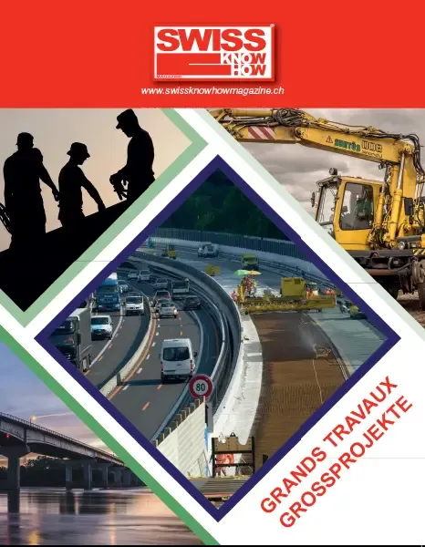

Le groupe SPALU Holding SA réunit SPALU SA, SPALU Servizi SA et Tresoldi Lattonieri SA. Dirigée par la quatrième génération en la personne d’Andrea Ender junior, SPALU SA est passée des revêtements routiers à toutes sortes de sols, à l’étanchéité et à d’autres activités de bâtiment et de génie civil. L’entreprise emploie environ 125 personnes, plus 25 en ferblanterie, avec un siège logistique à Canobbio et un siège administratif historique à Cassarate. Elle rappelle avoir introduit dès 1938 des allocations familiales et une caisse de prévoyance. Diversifiée vers les toitures végétalisées et le photovoltaïque intégré, elle a notamment asphalté les quais de Lugano et le pont-digue de Melide sur l’A2, malgré une conjoncture jugée difficile.
Texte rédigé avec l'aide de l'IA à partir de l'édition imprimée du magazine. En savoir plus
« È sempre più difficile avere accesso ai mandati e le prospettive future sono dubbie. »— Andrea Ender
Personnes citées
- Andrea EnderTitolare e Amministratore Delegato

Paru dans
Swiss Knowhow – Grands travaux / Grossprojekte 2016
2016 · page 51 · article original en italien
Signaler une erreur Lire l'article complet PDF